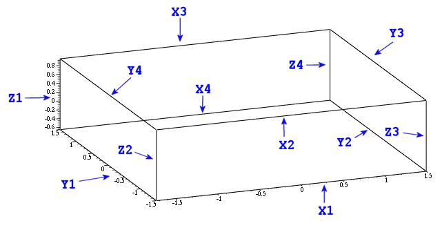

With
qwtplot3d.pro you can create a
- VC6 DLL project (Windows)
- Shared library for POSIX systems.
Adjust the target path and perhaps the library directories. The same
is true for the examples .pro
files.
QwtPlot3D runs with Qt version 3.0.5 for Windows and with version
3.1.? on Debian Linux. Older Qt versions are likely working. If I'm
wrong please don't hesitate to contact me. I'll try to provide a
code fix in this case.
The library requires OpenGL >= 1.1 or equivalent and a true color
mode with 24 or 32 bits color depth.
The API Documentation has been created using doxygen. If you
prefer to generate your own version, you will find the configuration in ./doc/Doxyfile.doxygen.
Also, a developer version also has been placed under ./doc/Developer.doxygen.
Remark:
You can test almost all abilities of QwtPlot3D from within the mesh2 example, including:
- Colors, fonts, normal vectors, mouse handling etc.
- Grid and FEM data reading from files (in
examples/data/*)
- Plotting styles and resolution change on the fly
So, it would be a good idea to get this example project running ...
Calculations are performed as accurate
as
DBL_EPSILON (see your
float.h for the precise value). This is mainly due to the autoscaler.
See e.g.
here for a topic related discussion.
First
Plot
//-----------------------------------------------------------------
// simpleplot.cpp
//
// A simple example which shows how to use SurfacePlot
//-----------------------------------------------------------------
#include <math.h>
#include <qapplication.h>
#include <qwt3d_surfaceplot.h>
#include <qwt3d_function.h>
using namespace Qwt3D;
class Rosenbrock : public Function
{
public:
Rosenbrock(SurfacePlot* pw)
:Function(pw)
{
}
double operator()(double x, double y)
{
return log((1-x)*(1-x) + 100 * (y - x*x)*(y - x*x)) / 8;
}
};
class Plot : public SurfacePlot
{
public:
Plot();
};
Plot::Plot()
{
setTitle("A Simple SurfacePlot Demonstration");
Rosenbrock rosenbrock(this);
rosenbrock.setMesh(41,31);
rosenbrock.setDomain(-1.73,1.5,-1.5,1.5);
rosenbrock.setMinZ(-10);
rosenbrock.create();
setRotation(30,0,15);
setScale(1,1,1);
setShift(0.15,0,0);
setZoom(0.9);
for (unsigned i=0; i!=coordinates()->axes.size(); ++i)
{
coordinates()->axes[i].setMajors(7);
coordinates()->axes[i].setMinors(4);
}
coordinates()->axes[X1].setLabelString("x-axis");
coordinates()->axes[Y1].setLabelString("y-axis");
coordinates()->axes[Z1].setLabelString(QChar (0x38f)); // Omega - see http://www.unicode.org/charts/
setCoordinateStyle(BOX);
updateData();
updateGL();
}
int main(int argc, char **argv)
{
QApplication a(argc, argv);
Plot plot;
a.setMainWidget(&plot);
plot.resize(800,600);
plot.show();
return a.exec();
}
|
The code above shows the almost most simple application of a
SurfacePlot. Data are provided by a mathematical function object
(Rosenbrock). You can derive from this kind of classes by
including
qwt3d_function.h. A base for the other player -
the widget itself - resides inside
qwt3d_surfaceplot.h.
The derived class makes only small adaptions to the standard behaviour,
mainly providing scales and label for the axes and a boxed coordinate
system . The axes themselves are autoscaled.
Mouse
Handling
The base class Plot3D implements a standard mouse behaviour. You can
perform shifts, turns, scales and zooms with your left mouse button and
combinations of
Ctrl, Shift
and
Alt. Some actions
have equivalents delegated to your wheel. You can also turn on or off
mouse handling entirely by using Plot3D::enableMouse () and
Plot3D::disableMouse (). The default behaviour can be changed with
Plot3D::assignMouse().
Coordinate
Systems and Axes

Plotting
Styles
Normal
Vectors
Colors
Fonts
etc.
Mesh Types
Data Input
QwtPlot3D supports one general and some special forms of native data
input:
Generic:
A general approach has been provided in form of the 2 member
bool
SurfacePlot::createDataRepresentation(double**
data, unsigned columns, unsigned rows, double minx, double maxx, double
miny, double maxy).
bool
SurfacePlot::createDataRepresentation(TripleField
const& data, CellField const& poly, MESHTYPE mtype = POLYGON)
The first one deals with grid data, the second variant provides
support for more free formed meshs, divided in a node (the TripleField
argument) and a polygon (the CellField) part. This kind of
data is common for FEM applications.
Grid data files:
jk:11051895-17021986
MESH
327 466
557726 567506
5.10821e+006 5.12216e+006
682 682 682 682 912 924 928 928 932 ...
... element[327*466-1]
Coding example:
Reading of the aforementioned file type
bool NativeReader::read(double minz, double maxz)
{
FILE* file;
unsigned int xmesh, ymesh;
double minx, maxx, miny, maxy;
if ( !collectInfo(file, xmesh, ymesh, minx, maxx, miny, maxy) )
return false;
/* allocate some space for the mesh */
double** data = allocateData(xmesh, ymesh);
for (unsigned int j = 0; j < ymesh; j++)
{
for (unsigned int i = 0; i < xmesh; i++)
{
if (fscanf(file, "%lf", &data[i][j]) != 1)
{
fprintf(stderr, "NativeReader::read: error in data file \"%s\"\n", fileName_.latin1());
return false;
}
if (data[i][j] > maxz)
data[i][j] = maxz;
else if (data[i][j] < minz)
data[i][j] = minz;
}
}
/* close the file */
fclose(file);
plotwidget_->createDataRepresentation(data, xmesh, ymesh, minx, maxx, miny, maxy);
deleteData(data,xmesh);
return true;
}
|
See NativeReader for additional information. Write your own reader
classes in this spirit. It should always be enough to provide
appropriate data for SurfacePlot::createDataRepresentation.
Mathematical
functions:
Setup a function object. To do so, inherit from the Function class and
write your own version of Function::operator()(double x, double y) Set
the domain and perhaps limitations for the range and call
Function::create(). Thats all.See also Function and the implementation
of concrete functions in 'examples'